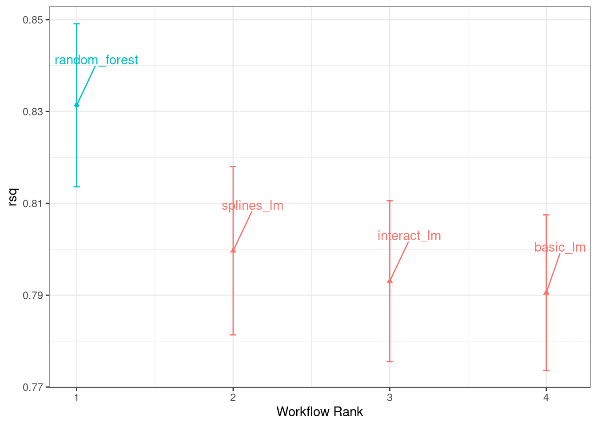
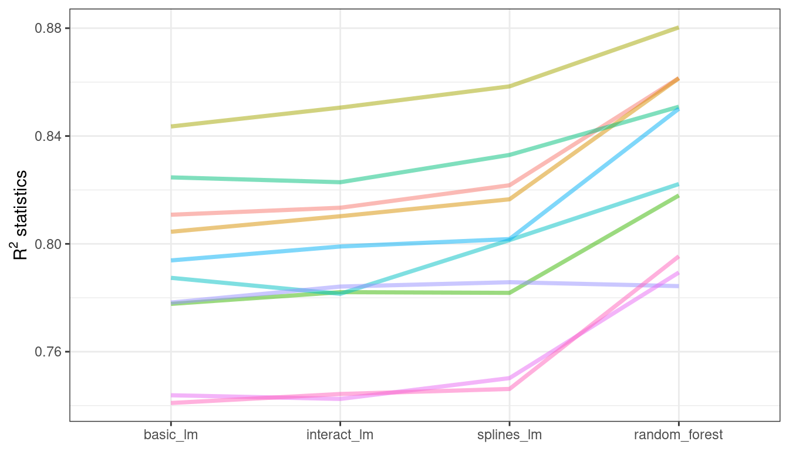
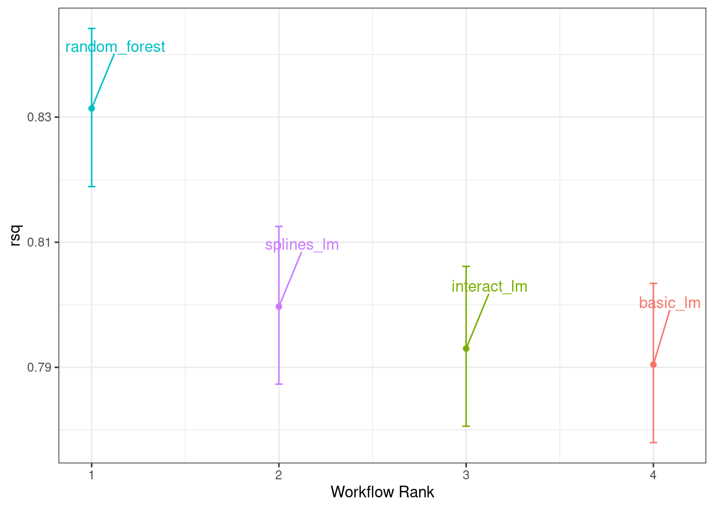
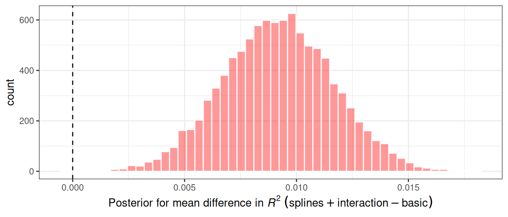
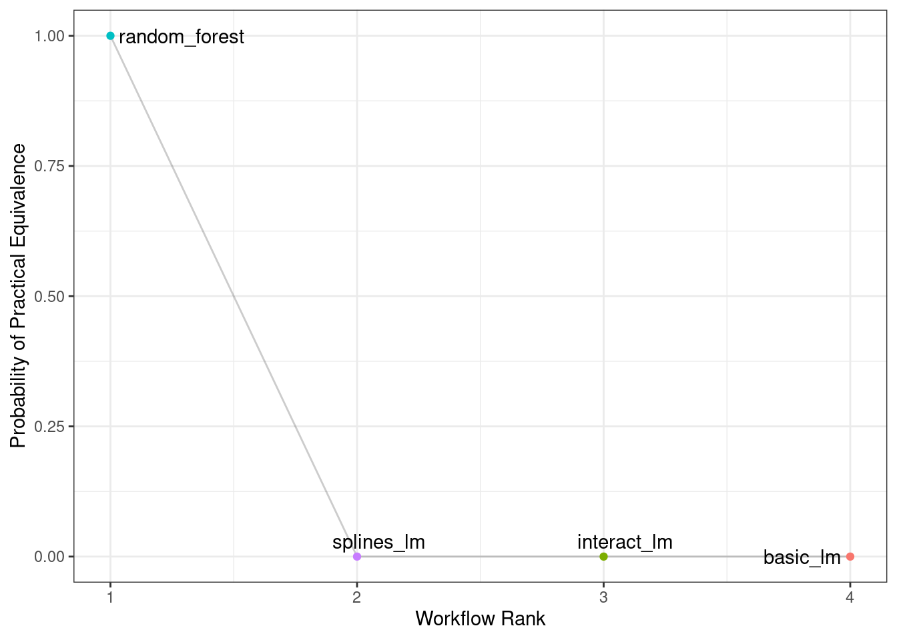
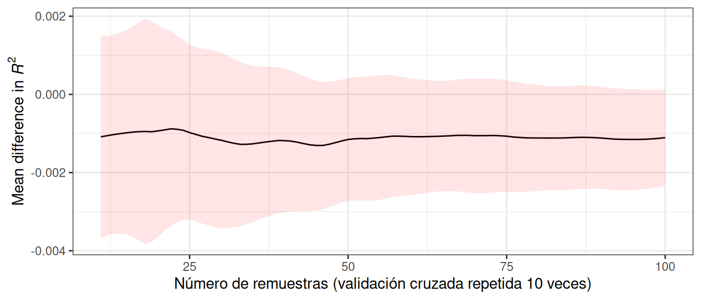

library(tidymodels)
tidymodels_prefer()
basic_rec <-
recipe(Sale_Price ~ Neighborhood + Gr_Liv_Area + Year_Built + Bldg_Type +
Latitude + Longitude, data = ames_train) %>%
step_log(Gr_Liv_Area, base = 10) %>%
step_other(Neighborhood, threshold = 0.01) %>%
step_dummy(all_nominal_predictors())
interaction_rec <-
basic_rec %>%
step_interact( ~ Gr_Liv_Area:starts_with("Bldg_Type_") )
spline_rec <-
interaction_rec %>%
step_ns(Latitude, Longitude, deg_free = 50)
preproc <-
list(basic = basic_rec,
interact = interaction_rec,
splines = spline_rec
)
lm_models <- workflow_set(preproc, list(lm = linear_reg()), cross = FALSE)
lm_models
## # A workflow set/tibble: 3 × 4
## wflow_id info option result
## <chr> <list> <list> <list>
## 1 basic_lm <tibble [1 × 4]> <opts[0]> <list [0]>
## 2 interact_lm <tibble [1 × 4]> <opts[0]> <list [0]>
## 3 splines_lm <tibble [1 × 4]> <opts[0]> <list [0]>11 Comparación De Modelos Con Remuestreo
Una vez que creamos dos o más modelos, el siguiente paso es compararlos para entender cuál es mejor. En algunos casos, las comparaciones pueden ser dentro del modelo, donde el mismo modelo puede evaluarse con diferentes características o métodos de preprocesamiento. Alternativamente, las comparaciones entre modelos, como cuando comparamos modelos de regresión lineal y de random forest en el Capítulo 10, son el escenario más común.
En cualquier caso, el resultado es una colección de estadísticas resumidas remuestreadas (por ejemplo, RMSE, precisión, etc.) para cada modelo. En este capítulo, primero demostraremos cómo se pueden usar conjuntos de flujos de trabajo para ajustarse a múltiples modelos. Luego, discutiremos aspectos importantes de las estadísticas de remuestreo. Finalmente, veremos cómo comparar modelos formalmente (usando pruebas de hipótesis o un enfoque bayesiano).
11.1 Crear Múltiples Modelos Con Conjuntos De Flujo De Trabajo
En Sección 7.5 describimos la idea de un conjunto de flujo de trabajo donde se pueden generar combinatoriamente diferentes preprocesadores y/o modelos. En el Capítulo 10, utilizamos una receta para los datos de Ames que incluía un término de interacción así como funciones spline para longitud y latitud. Para demostrar más con los conjuntos de flujos de trabajo, creemos tres modelos lineales diferentes que agreguen estos pasos de preprocesamiento de forma incremental; Podemos probar si estos términos adicionales mejoran los resultados del modelo. Crearemos tres recetas y luego las combinaremos en un conjunto de flujo de trabajo:
Nos gustaría volver a muestrear cada uno de estos modelos por turno. Para hacerlo, usaremos una función similar a purrr llamada workflow_map(). Esta función toma un argumento inicial de la función para aplicarlo a los flujos de trabajo, seguido de opciones para esa función. También configuramos un argumento verbose que imprimirá el progreso, así como un argumento seed que garantiza que cada modelo utilice el mismo flujo de números aleatorios que los demás.
lm_models <-
lm_models %>%
workflow_map("fit_resamples",
# Options to `workflow_map()`:
seed = 1101, verbose = TRUE,
# Options to `fit_resamples()`:
resamples = ames_folds, control = keep_pred)
## i 1 of 3 resampling: basic_lm
## ✔ 1 of 3 resampling: basic_lm (623ms)
## i 2 of 3 resampling: interact_lm
## ✔ 2 of 3 resampling: interact_lm (674ms)
## i 3 of 3 resampling: splines_lm
## ✔ 3 of 3 resampling: splines_lm (1.1s)
lm_models
## # A workflow set/tibble: 3 × 4
## wflow_id info option result
## <chr> <list> <list> <list>
## 1 basic_lm <tibble [1 × 4]> <opts[2]> <rsmp[+]>
## 2 interact_lm <tibble [1 × 4]> <opts[2]> <rsmp[+]>
## 3 splines_lm <tibble [1 × 4]> <opts[2]> <rsmp[+]>Observe que las columnas option y result ahora están completas. La primera incluye las opciones para fit_resamples() que se dieron (para reproducibilidad), y la última columna contiene los resultados producidos por fit_resamples().
Hay algunas funciones convenientes para conjuntos de flujos de trabajo, incluida collect_metrics() para recopilar las estadísticas de rendimiento. Podemos filtrar() a cualquier métrica específica que nos interese:
collect_metrics(lm_models) %>%
filter(.metric == "rmse")
## # A tibble: 3 × 9
## wflow_id .config preproc model .metric .estimator mean n std_err
## <chr> <chr> <chr> <chr> <chr> <chr> <dbl> <int> <dbl>
## 1 basic_lm Preprocessor1_M… recipe line… rmse standard 0.0803 10 0.00264
## 2 interact_lm Preprocessor1_M… recipe line… rmse standard 0.0799 10 0.00272
## 3 splines_lm Preprocessor1_M… recipe line… rmse standard 0.0785 10 0.00282¿Qué pasa con el modelo de bosque aleatorio del capítulo anterior? Podemos agregarlo al conjunto convirtiéndolo primero a su propio conjunto de flujo de trabajo y luego vinculando filas. Esto requiere que, cuando se volvió a muestrear el modelo, se haya configurado la opción save_workflow = TRUE en la función de control.
four_models <-
as_workflow_set(random_forest = rf_res) %>%
bind_rows(lm_models)
four_models
## # A workflow set/tibble: 4 × 4
## wflow_id info option result
## <chr> <list> <list> <list>
## 1 random_forest <tibble [1 × 4]> <opts[0]> <rsmp[+]>
## 2 basic_lm <tibble [1 × 4]> <opts[2]> <rsmp[+]>
## 3 interact_lm <tibble [1 × 4]> <opts[2]> <rsmp[+]>
## 4 splines_lm <tibble [1 × 4]> <opts[2]> <rsmp[+]>El método autoplot(), con salida en Figura 11.1, muestra intervalos de confianza para cada modelo en orden de mejor a peor. En este capítulo, nos centraremos en el coeficiente de determinación (también conocido como \(R^2\)) y usaremos metric = "rsq" en la llamada para configurar nuestro gráfico:
library(ggrepel)
autoplot(four_models, metric = "rsq") +
geom_text_repel(aes(label = wflow_id), nudge_x = 1/8, nudge_y = 1/100) +
theme(legend.position = "none")

En este gráfico de intervalos de confianza \(R^2\), podemos ver que el método de random forest está funcionando mejor y hay mejoras menores en los modelos lineales a medida que agregamos más pasos a la receta.
Ahora que tenemos 10 estimaciones de rendimiento remuestreadas para cada uno de los cuatro modelos, estas estadísticas resumidas se pueden utilizar para realizar comparaciones entre modelos.
11.2 Comparación De Estadísticas De Rendimiento Remuestreadas
Teniendo en cuenta los resultados anteriores para los tres modelos lineales, parece que los términos adicionales no mejoran profundamente las estadísticas medias de RMSE o \(R^2\) para los modelos lineales. La diferencia es pequeña, pero podría ser mayor que el ruido experimental en el sistema, es decir, considerarse estadísticamente significativa. Podemos probar formalmente la hipótesis de que los términos adicionales aumentan \(R^2\).
Antes de hacer comparaciones entre modelos, es importante para nosotros analizar la correlación dentro de la muestra para las estadísticas de remuestreo. Cada modelo se midió con los mismos pliegues de validación cruzada y los resultados para la misma nueva muestra tienden a ser similares.
En otras palabras, hay algunos remuestreos en los que el rendimiento de todos los modelos tiende a ser bajo y otros en los que tiende a ser alto. En estadística, esto se denomina componente de variación remuestreo a remuestreo.
Para ilustrar, recopilemos las estadísticas de remuestreo individuales para los modelos lineales y el bosque aleatorio. Nos centraremos en la estadística \(R^2\) para cada modelo, que mide la correlación entre los precios de venta observados y previstos para cada casa. Vamos a filtrar() para mantener solo las métricas \(R^2\), remodelar los resultados y calcular cómo se correlacionan las métricas entre sí.
rsq_indiv_estimates <-
collect_metrics(four_models, summarize = FALSE) %>%
filter(.metric == "rsq")
rsq_wider <-
rsq_indiv_estimates %>%
select(wflow_id, .estimate, id) %>%
pivot_wider(id_cols = "id", names_from = "wflow_id", values_from = ".estimate")
corrr::correlate(rsq_wider %>% select(-id), quiet = TRUE)
## # A tibble: 4 × 5
## term random_forest basic_lm interact_lm splines_lm
## <chr> <dbl> <dbl> <dbl> <dbl>
## 1 random_forest NA 0.887 0.888 0.889
## 2 basic_lm 0.887 NA 0.993 0.997
## 3 interact_lm 0.888 0.993 NA 0.987
## 4 splines_lm 0.889 0.997 0.987 NAEstas correlaciones son altas e indican que, entre modelos, existen grandes correlaciones dentro de la muestra. Para ver esto visualmente en Figura 11.2, las estadísticas \(R^2\) se muestran para cada modelo con líneas que conectan los remuestreos:
rsq_indiv_estimates %>%
mutate(wflow_id = reorder(wflow_id, .estimate)) %>%
ggplot(aes(x = wflow_id, y = .estimate, group = id, color = id)) +
geom_line(alpha = .5, linewidth = 1.25) +
theme(legend.position = "none")

Si el efecto de remuestreo a remuestreo no fuera real, no habría líneas paralelas. Una prueba estadística de las correlaciones evalúa si las magnitudes de estas correlaciones no son simplemente ruido. Para los modelos lineales:
rsq_wider %>%
with( cor.test(basic_lm, splines_lm) ) %>%
tidy() %>%
select(estimate, starts_with("conf"))
## # A tibble: 1 × 3
## estimate conf.low conf.high
## <dbl> <dbl> <dbl>
## 1 0.997 0.987 0.999Los resultados de la prueba de correlación (la “estimación”, estimate, de la correlación y los intervalos de confianza) nos muestran que la correlación dentro de la muestra parece ser real.
¿Qué efecto tiene la correlación adicional en nuestro análisis? Considere la varianza de una diferencia de dos variables:
\[\operatorname{Var}[X - Y] = \operatorname{Var}[X] + \operatorname{Var}[Y] - 2 \operatorname{Cov}[X, Y]\]
El último término es la covarianza entre dos elementos. Si hay una covarianza positiva significativa, entonces cualquier prueba estadística de esta diferencia carecería de potencia crítica al comparar la diferencia en dos modelos. En otras palabras, ignorar el efecto de remuestreo a remuestreo sesgaría nuestras comparaciones de modelos hacia la ausencia de diferencias entre los modelos.
Esta característica de las estadísticas de remuestreo entrará en juego en las dos secciones siguientes.
Antes de realizar comparaciones de modelos o observar los resultados del remuestreo, puede resultar útil definir un tamaño del efecto práctico relevante. Dado que estos análisis se centran en las estadísticas de \(R^2\), el tamaño del efecto práctico es el cambio en \(R^2\) que consideraríamos una diferencia realista que importa. Por ejemplo, podríamos pensar que dos modelos no son prácticamente diferentes si sus valores de \(R^2\) están dentro de \(\pm 2\)%. Si este fuera el caso, las diferencias menores al 2% no se consideran importantes incluso si son estadísticamente significativas.
La importancia práctica es subjetiva; dos personas pueden tener ideas muy diferentes en el umbral de la importancia. Sin embargo, más adelante mostraremos que esta consideración puede resultar muy útil a la hora de decidir entre modelos.
11.3 Métodos Simples De Prueba De Hipótesis
Podemos utilizar pruebas de hipótesis simples para hacer comparaciones formales entre modelos. Considere el conocido modelo estadístico lineal:
\[y_{ij} = \beta_0 + \beta_1x_{i1} + \ldots + \beta_px_{ip} + \epsilon_{ij}\]
Este modelo versátil se utiliza para crear modelos de regresión, además de ser la base de la popular técnica de análisis de varianza (ANOVA) para comparar grupos. Con el modelo ANOVA, los predictores (\(x_{ij}\)) son variables binarias ficticias para diferentes grupos. A partir de esto, los parámetros \(\beta\) estiman si dos o más grupos son diferentes entre sí utilizando técnicas de prueba de hipótesis.
En nuestra situación específica, el ANOVA también puede realizar comparaciones de modelos. Supongamos que las estadísticas individuales \(R^2\) remuestreadas sirven como datos de resultado (es decir, \(y_{ij}\)) y los modelos como predictores en el modelo ANOVA. Se muestra una muestra de esta estructura de datos en Tabla 11.1.
| Y = rsq | model | X1 | X2 | X3 | id |
|---|---|---|---|---|---|
| 0.8108 | basic_lm | 0 | 0 | 0 | Fold01 |
| 0.8134 | interact_lm | 1 | 0 | 0 | Fold01 |
| 0.8615 | random_forest | 0 | 1 | 0 | Fold01 |
| 0.8217 | splines_lm | 0 | 0 | 1 | Fold01 |
| 0.8045 | basic_lm | 0 | 0 | 0 | Fold02 |
| 0.8103 | interact_lm | 1 | 0 | 0 | Fold02 |
Las columnas X1, X2 y X3 de la tabla son indicadores de los valores de la columna modelo. Su orden se definió de la misma manera que R los definiría, ordenados alfabéticamente por modelo.
Para nuestra comparación de modelos, el modelo ANOVA específico es:
\[y_{ij} = \beta_0 + \beta_1x_{i1} + \beta_2x_{i2} + \beta_3x_{i3} + \epsilon_{ij}\]
donde
\(\beta_0\) es la estimación del estadístico \(R^2\) medio para los modelos lineales básicos (es decir, sin splines ni interacciones),
\(\beta_1\) es el cambio en la media \(R^2\) cuando se agregan interacciones al modelo lineal básico,
\(\beta_2\) es el cambio en la media \(R^2\) entre el modelo lineal básico y el modelo de random forest, y
\(\beta_3\) es el cambio en la media \(R^2\) entre el modelo lineal básico y uno con interacciones y splines.
A partir de estos parámetros del modelo, se generan pruebas de hipótesis y valores p para comparar modelos estadísticamente, pero debemos lidiar con cómo manejar el efecto de remuestreo a remuestre. Históricamente, los grupos de remuestreo se consideraban un efecto de bloque y se agregaba un término apropiado al modelo. Alternativamente, el efecto de remuestreo podría considerarse un efecto aleatorio en el que estas remuestras particulares se extrajeron al azar de una población más grande de posibles remuestras. Sin embargo, no estamos realmente interesados en estos efectos; sólo queremos ajustarlos en el modelo para que las varianzas de las diferencias interesantes se estimen adecuadamente.
Tratar las remuestras como efectos aleatorios es teóricamente atractivo. Los métodos para ajustar un modelo ANOVA con este tipo de efecto aleatorio podrían incluir el modelo lineal mixto (Faraway 2016) o un modelo jerárquico bayesiano (que se muestra en la siguiente sección).
Un método simple y rápido para comparar dos modelos a la vez es usar las diferencias en los valores de \(R^2\) como datos de resultado en el modelo ANOVA. Dado que los resultados coinciden mediante remuestreo, las diferencias no contienen el efecto de remuestreo a remuestre y, por esta razón, el modelo ANOVA estándar es apropiado. Para ilustrar, esta llamada a lm() prueba la diferencia entre dos de los modelos de regresión lineal:
compare_lm <-
rsq_wider %>%
mutate(difference = splines_lm - basic_lm)
lm(difference ~ 1, data = compare_lm) %>%
tidy(conf.int = TRUE) %>%
select(estimate, p.value, starts_with("conf"))
## # A tibble: 1 × 4
## estimate p.value conf.low conf.high
## <dbl> <dbl> <dbl> <dbl>
## 1 0.00913 0.0000256 0.00650 0.0118
# Alternativamente, también se podría utilizar una prueba t pareada:
rsq_wider %>%
with( t.test(splines_lm, basic_lm, paired = TRUE) ) %>%
tidy() %>%
select(estimate, p.value, starts_with("conf"))
## # A tibble: 1 × 4
## estimate p.value conf.low conf.high
## <dbl> <dbl> <dbl> <dbl>
## 1 0.00913 0.0000256 0.00650 0.0118Podríamos evaluar cada diferencia por pares de esta manera. Tenga en cuenta que el valor p indica una señal estadísticamente significativa; la colección de términos splines para longitud y latitud parece tener un efecto. Sin embargo, la diferencia en \(R^2\) se estima en 0.91%. Si nuestro tamaño de efecto práctico fuera del 2%, es posible que no consideráramos que valga la pena incluir estos términos en el modelo.
Ya hemos mencionado brevemente los valores p, pero ¿qué son realmente? De Wasserstein y Lazar (2016): “Informalmente, un valor p es la probabilidad, según un modelo estadístico específico, de que un resumen estadístico de los datos (por ejemplo, la diferencia de medias muestrales entre dos grupos comparados) sea igual o más extremo que su valor observado.”
En otras palabras, si este análisis se repitiera una gran cantidad de veces bajo la hipótesis nula de que no hay diferencias, el valor p refleja cuán extremos serían nuestros resultados observados en comparación.
11.4 Métodos Bayesianos
Simplemente utilizamos pruebas de hipótesis para comparar modelos formalmente, pero también podemos adoptar un enfoque más general para realizar estas comparaciones formales utilizando efectos aleatorios y estadísticas bayesianas (McElreath 2020). Si bien el modelo es más complejo que el método ANOVA, la interpretación es más simple y directa que el método del valor p. El modelo ANOVA anterior tenía la forma:
\[y_{ij} = \beta_0 + \beta_1x_{i1} + \beta_2x_{i2} + \beta_3x_{i3} + \epsilon_{ij}\]
donde se supone que los residuales \(\epsilon_{ij}\) son independientes y siguen una distribución gaussiana con media cero y desviación estándar constante de \(\sigma\). A partir de este supuesto, la teoría estadística muestra que los parámetros de regresión estimados siguen una distribución gaussiana multivariada y, de ahí, se derivan los valores p y los intervalos de confianza.
Un modelo lineal bayesiano hace suposiciones adicionales. Además de especificar una distribución para los residuos, requerimos especificaciones de distribución previa para los parámetros del modelo ( \(\beta_j\) y \(\sigma\) ). Estas son distribuciones de los parámetros que asume el modelo antes de ser expuesto a los datos observados. Por ejemplo, un conjunto simple de distribuciones previas para nuestro modelo podría ser:
\[\begin{align} \epsilon_{ij} &\sim N(0, \sigma) \notag \\ \beta_j &\sim N(0, 10) \notag \\ \sigma &\sim \text{exponential}(1) \notag \end{align}\]Estos antecedentes establecen los rangos posibles/probables de los parámetros del modelo y no tienen parámetros desconocidos. Por ejemplo, el valor anterior de \(\sigma\) indica que los valores deben ser mayores que cero, están muy sesgados a la derecha y tienen valores que generalmente son menores que 3 o 4.
Tenga en cuenta que los parámetros de regresión tienen una distribución a priori bastante amplia, con una desviación estándar de 10. En muchos casos, es posible que no tengamos una opinión sólida sobre el a priori más allá de que sea simétrico y tenga forma de campana. La gran desviación estándar implica un previo bastante poco informativo; no es demasiado restrictivo en términos de los posibles valores que podrían adoptar los parámetros. Esto permite que los datos tengan más influencia durante la estimación de parámetros.
Dados los datos observados y las especificaciones de distribución previas, se pueden estimar los parámetros del modelo. Las distribuciones finales de los parámetros del modelo son combinaciones de las estimaciones previas y de probabilidad. Estas distribuciones posteriores de los parámetros son las distribuciones clave de interés. Son una descripción probabilística completa de los parámetros estimados del modelo.
Un modelo de intersección aleatoria
Para adaptar nuestro modelo ANOVA bayesiano de modo que las remuestras se modelen adecuadamente, consideramos un modelo de intersección aleatoria. Aquí, asumimos que los remuestreos impactan el modelo solo al cambiar la intersección. Tenga en cuenta que esto impide que los remuestreos tengan un impacto diferencial en los parámetros de regresión \(\beta_j\); Se supone que estos tienen la misma relación entre remuestreos. Esta ecuación modelo es:
\[y_{ij} = (\beta_0 + b_{i}) + \beta_1x_{i1} + \beta_2x_{i2} + \beta_3x_{i3} + \epsilon_{ij}\]
Este no es un modelo irrazonable para estadísticas remuestreadas que, cuando se trazan entre modelos como en Figura 11.2, tienden a tener efectos bastante paralelos entre modelos (es decir, poco cruce de líneas).
Para la configuración de este modelo, se hace un supuesto adicional para la distribución previa de efectos aleatorios. Una suposición razonable para esta distribución es otra distribución simétrica, como otra curva en forma de campana. Dado el tamaño de muestra efectivo de 10 en nuestro resumen de datos estadísticos, usemos una distribución previa que sea más amplia que una distribución normal estándar. Usaremos una distribución t con un solo grado de libertad (es decir, \(b_i \sim t(1)\)), que tiene colas más pesadas que una distribución gaussiana análoga.
El paquete tidyposterior tiene funciones para ajustarse a dichos modelos bayesianos con el fin de comparar modelos remuestreados. La función principal se llama perf_mod() y está configurada para “simplemente funcionar” para diferentes tipos de objetos:
Para conjuntos de flujos de trabajo, crea un modelo ANOVA donde los grupos corresponden a los flujos de trabajo. Nuestros modelos existentes no optimizaron ningún parámetro de ajuste (consulte los siguientes tres capítulos). Si uno de los flujos de trabajo del conjunto tenía datos sobre parámetros de ajuste, en el análisis bayesiano se utilizan los mejores parámetros de ajuste establecidos para cada flujo de trabajo. En otras palabras, a pesar de la presencia de parámetros de ajuste,
perf_mod()se centra en hacer comparaciones entre flujos de trabajo.Para los objetos que contienen un único modelo que ha sido ajustado usando remuestreo,
perf_mod()hace comparaciones dentro del modelo. En esta situación, las variables de agrupación probadas en el modelo ANOVA bayesiano son los submodelos definidos por los parámetros de ajuste.La función
perf_mod()también puede tomar un marco de datos producido por rsample que tiene columnas de métricas de rendimiento asociadas con dos o más resultados de modelo/flujo de trabajo. Estos podrían haberse generado por medios no estándar.
A partir de cualquiera de estos tipos de objetos, la función perf_mod() determina un modelo bayesiano apropiado y lo ajusta con las estadísticas de remuestreo. Para nuestro ejemplo, modelará los cuatro conjuntos de estadísticas \(R^2\) asociadas con los flujos de trabajo.
El paquete tidyposterior utiliza el software Stan para especificar y ajustar los modelos a través del paquete rstanarm. Las funciones dentro de ese paquete tienen prioridades predeterminadas (consulte ?priors para obtener más detalles). El siguiente modelo utiliza los valores previos predeterminados para todos los parámetros excepto para las intersecciones aleatorias (que siguen una distribución t). El proceso de estimación utiliza números aleatorios para que la semilla se establezca dentro de la llamada a la función. El proceso de estimación es iterativo y se replica varias veces en colecciones llamadas cadenas. El parámetro iter le dice a la función cuánto tiempo ejecutar el proceso de estimación en cada cadena. Cuando se utilizan varias cadenas, sus resultados se combinan (supongamos que esto está validado mediante evaluaciones diagnósticas).
library(tidyposterior)
library(rstanarm)
# El paquete rstanarm genera grandes cantidades de producción; esos resultados
# no se muestran aquí, pero vale la pena inspeccionarlos para detectar posibles problemas. El
# opción `refresh = 0` se puede utilizar para eliminar el registro..
rsq_anova <-
perf_mod(
four_models,
metric = "rsq",
prior_intercept = rstanarm::student_t(df = 1),
chains = 4,
iter = 5000,
seed = 1102
)El objeto resultante tiene información sobre el proceso de remuestreo, así como el objeto Stan incrustado en él (en un elemento llamado “stan”). Lo que más nos interesa son las distribuciones posteriores de los parámetros de regresión. El paquete tidyposterior tiene un método tidy() que extrae estas distribuciones posteriores en un tibble:
model_post <-
rsq_anova %>%
# Tomaa una muestra aleatoria de la distribución posterior
# así que se configura la semilla nuevamente para que sea reproducible.
tidy(seed = 1103)
glimpse(model_post)
## Rows: 40,000
## Columns: 2
## $ model <chr> "random_forest", "basic_lm", "interact_lm", "splines_lm", "rando…
## $ posterior <dbl> 0.8287, 0.7898, 0.7921, 0.8000, 0.8338, 0.7944, 0.7970, 0.8002, …Las cuatro distribuciones posteriores se visualizan en Figura 11.3.
model_post %>%
mutate(model = forcats::fct_inorder(model)) %>%
ggplot(aes(x = posterior)) +
geom_histogram(bins = 50, color = "white", fill = "blue", alpha = 0.4) +
facet_wrap(~ model, ncol = 1)
Estos histogramas describen las distribuciones de probabilidad estimadas del valor medio \(R^2\) para cada modelo. Existe cierta superposición, especialmente para los tres modelos lineales.
También hay un método básico autoplot() para los resultados del modelo, que se muestra en Figura 11.4, así como el objeto ordenado que muestra gráficos de densidad superpuestos.
autoplot(rsq_anova) +
geom_text_repel(aes(label = workflow), nudge_x = 1/8, nudge_y = 1/100) +
theme(legend.position = "none")

Un aspecto maravilloso del uso del remuestreo con modelos bayesianos es que, una vez que tenemos los parámetros posteriores, es trivial obtener las distribuciones posteriores para las combinaciones de los parámetros. Por ejemplo, para comparar los dos modelos de regresión lineal, nos interesa la diferencia de medias. La parte posterior de esta diferencia se calcula tomando muestras de las partes posteriores individuales y tomando las diferencias. La función contrast_models() puede hacer esto. Para especificar las comparaciones a realizar, los parámetros list_1 y list_2 toman vectores de caracteres y calculan las diferencias entre los modelos en esas listas (parametrizados como list_1 - list_2).
Podemos comparar dos de los modelos lineales y visualizar los resultados en Figura 11.5.
rqs_diff <-
contrast_models(rsq_anova,
list_1 = "splines_lm",
list_2 = "basic_lm",
seed = 1104)
rqs_diff %>%
as_tibble() %>%
ggplot(aes(x = difference)) +
geom_vline(xintercept = 0, lty = 2) +
geom_histogram(bins = 50, color = "white", fill = "red", alpha = 0.4)

La parte posterior muestra que el centro de la distribución es mayor que cero (lo que indica que el modelo con splines normalmente tenía valores más grandes) pero se superpone con cero hasta cierto punto. El método summary() para este objeto calcula la media de la distribución así como los intervalos creíbles, el análogo bayesiano de los intervalos de confianza.
summary(rqs_diff) %>%
select(-starts_with("pract"))
## # A tibble: 1 × 6
## contrast probability mean lower upper size
## <chr> <dbl> <dbl> <dbl> <dbl> <dbl>
## 1 splines_lm vs basic_lm 1.00 0.00917 0.00509 0.0132 0La columna probability refleja la proporción del posterior que es mayor que cero. Ésta es la probabilidad de que la diferencia positiva sea real. El valor no es cercano a cero, lo que proporciona un fuerte argumento a favor de la significancia estadística, es decir, la idea de que estadísticamente la diferencia real no es cero.
Sin embargo, la estimación de la diferencia de medias es bastante cercana a cero. Recuerde que el tamaño del efecto práctico que sugerimos anteriormente es del 2%. Con una distribución posterior, también podemos calcular la probabilidad de que sea prácticamente significativo. En el análisis bayesiano, esta es una estimación ROPE (para Región de equivalencia práctica, Kruschke y Liddell (2018)). Para estimar esto, se utiliza la opción size de la función de summary:
summary(rqs_diff, size = 0.02) %>%
select(contrast, starts_with("pract"))
## # A tibble: 1 × 4
## contrast pract_neg pract_equiv pract_pos
## <chr> <dbl> <dbl> <dbl>
## 1 splines_lm vs basic_lm 0 1 0La columna pract_equiv es la proporción del posterior que está dentro de [-size, size] (las columnas pract_neg y pract_pos son las proporciones que están debajo y encima de este intervalo). Este gran valor indica que, para nuestro tamaño del efecto, existe una probabilidad abrumadora de que los dos modelos sean prácticamente iguales. Aunque el gráfico anterior mostró que nuestra diferencia probablemente sea distinta de cero, la prueba de equivalencia sugiere que es lo suficientemente pequeña como para no ser significativa en la práctica.
Se podría utilizar el mismo proceso para comparar el modelo de random forest con una o ambas regresiones lineales que se volvieron a muestrear. De hecho, cuando se usa perf_mod() con un conjunto de flujo de trabajo, el método autoplot() puede mostrar los resultados de pract_equiv que comparan cada flujo de trabajo con el mejor actual (el modelo de bosque aleatorio, en este caso).
autoplot(rsq_anova, type = "ROPE", size = 0.02) +
geom_text_repel(aes(label = workflow)) +
theme(legend.position = "none")

Figura 11.6 nos muestra que ninguno de los modelos lineales se acerca al modelo de random forest cuando se utiliza un tamaño de efecto práctico del 2%.
El efecto de la cantidad de remuestreo.
¿Cómo afecta el número de remuestreos a estos tipos de comparaciones bayesianas formales? Más remuestreos aumentan la precisión de la estimación general del remuestreo; esa precisión se propaga a este tipo de análisis. A modo de ilustración, se agregaron nuevas muestras adicionales mediante validación cruzada repetida. ¿Cómo cambió la distribución posterior? Figura 11.7 muestra los intervalos de credibilidad del 90% con hasta 100 remuestreos (generados a partir de 10 repeticiones de validación cruzada 10 veces).1
ggplot(intervals,
aes(x = resamples, y = mean)) +
geom_path() +
geom_ribbon(aes(ymin = lower, ymax = upper), fill = "red", alpha = .1) +
labs(x = "Número de remuestras (validación cruzada repetida 10 veces)")

El ancho de los intervalos disminuye a medida que se agregan más muestras. Claramente, pasar de diez remuestreos a treinta tiene un impacto mayor que pasar de ochenta a 100. Hay rendimientos decrecientes por utilizar un número “grande” de remuestreos (“grande” será diferente para diferentes conjuntos de datos).
11.5 Resumen Del Capítulo
Este capítulo describió métodos estadísticos formales para probar diferencias en el rendimiento entre modelos. Demostramos el efecto dentro de la nueva muestra, donde los resultados para la misma nueva muestra tienden a ser similares; este aspecto de las estadísticas resumidas remuestreadas requiere un análisis apropiado para realizar comparaciones de modelos válidas. Además, aunque la significación estadística y la significancia práctica son conceptos importantes para las comparaciones de modelos, son diferentes.
El código para generar
intervalosestá disponible en https://github.com/tidymodels/TMwR/blob/main/extras/ames_posterior_intervals.R.↩︎